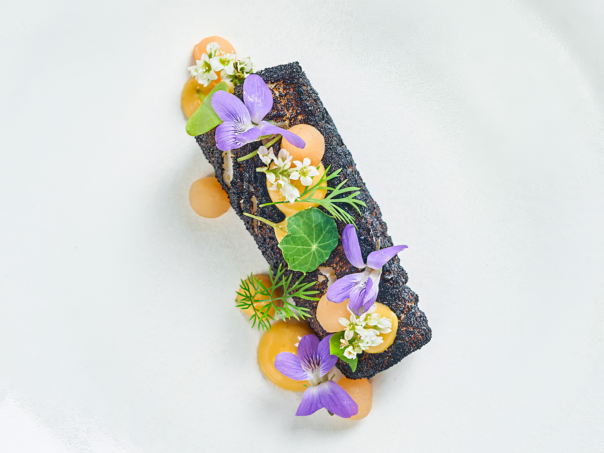

Ottawa Fine Dining
Ottawa's tasting menu scene has quietly become one of the strongest in Canada. From modernist multi-course experiences to fermentation-driven seasonal menus, the city's best kitchens are operating at a level that would impress in any major food city. Here are the five worth your time — and your money.
No. 1
There is no menu at Atelier. No choices, no substitutions — just a modernist tasting experience that changes constantly and executes at a level that would be remarkable in any city. Chef Marc Lepine has been running this format for over a decade, and the consistency is extraordinary. This is Ottawa's most ambitious kitchen, full stop.
No. 2
Chef Briana Kim's fermentation-driven tasting menu is one of the most distinctive culinary voices in Ottawa. Intimate and considered, Antheia brings a clear point of view to every course — rooted in Canadian ingredients, shaped by technique, and building momentum fast since opening in early 2026. At nine courses it is unhurried and precise, exactly the kind of experience Michelin inspectors look for.
No. 3
Beckta has been a cornerstone of Ottawa fine dining for two decades and shows no signs of slowing down. The five-course tasting menu is refined and approachable, with a wine program that remains one of the best in the city. For those new to tasting menus, Beckta is the ideal entry point — polished, welcoming, and consistently excellent.
No. 4
Refined Canadian cuisine rooted in seasonality, Aiana brings a clarity of vision to Ottawa's fine dining scene that feels both new and necessary. Nine courses that move with intention, showcasing ingredients at their peak. One of the most exciting arrivals to the city's tasting menu landscape in recent years.
No. 5
Venetian soul food, beautifully executed. North & Navy's tasting menu takes the flavours of Italy's Adriatic coast and filters them through a Canadian lens. Six courses of handmade pasta, pristine seafood, and precise technique — all delivered in one of the most charming dining rooms in the city. A perennial favourite for good reason.